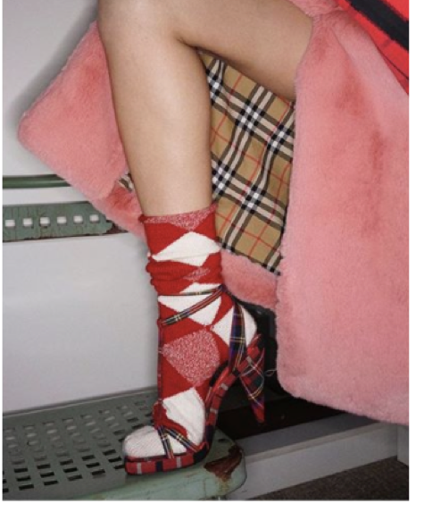

Introducing a capsule collection of reissued pieces from the Burberry archive, re‑released as part of the February 2018 runway collection.
Hold Spacebar

— ‘80s / ‘90s archival casual wear — revisited with rainbow check — the newest iteration of the iconic Burberry symbol — vintage trench coats, hand restored in Castleford, UK —